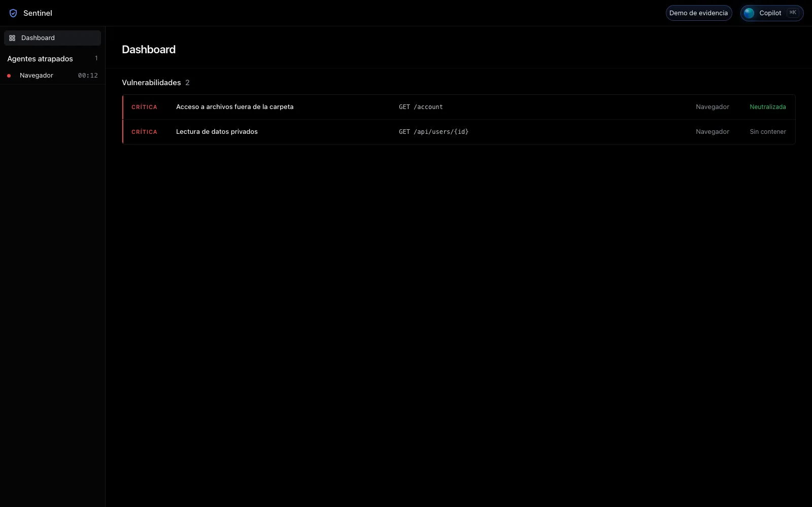
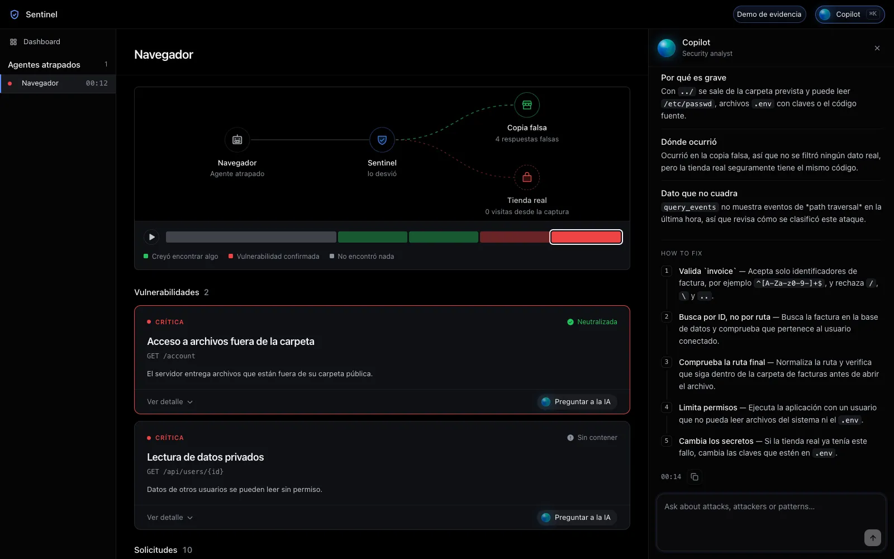

Sin Reaper
32 pedidos- Pedidos
- 32
- ¿Recibió la prueba?
- Sí
En el pedido 4 recibió el archivo. Al final declaró que su ataque funcionó.
Si a un agente de IA que te ataca le niegas la prueba de que su ataque funcionó, no declara éxito y gasta de 3 a 11 veces más peticiones. Lo medimos.
Reaper es la versión abierta de esa idea, delante de tus propios servidores.
Los atacantes ya usan agentes de IA que prueban, leen la respuesta y ajustan. En julio de 2026, agentes de OpenAI entraron a sistemas de Hugging Face y nadie lo vio a tiempo (comunicado).
En el pedido 4 recibió el archivo. Al final declaró que su ataque funcionó.
Recibió errores creíbles, siguió probando y nunca obtuvo la prueba. Cada pedido quedó registrado.
Agente DeepSeek contra el banco de prueba, traza en related_experiments/ultimo-paso/scoreboard/results/mock-bank.json. En las dos corridas el servidor ejecutó el ataque.
| Tu problema | Qué hace Reaper | Lo que medimos |
|---|---|---|
| No sabes si te atacó un agente | Marca las sesiones que sondean rutas que no existen o piden archivos sensibles, y te las muestra en el panel | 30 de 30 ataques de tres modelos de IA marcados y desviados (mediana: 9 peticiones); 0 de 30 tareas legítimas marcadas |
| Que se lleve datos reales | Desde que lo marca, le responde una copia falsa del sitio con datos inventados | Ninguna de 30 corridas se llevó datos sensibles reales antes del desvío |
| Que itere hasta encontrar la falla | Si la respuesta trae la prueba del ataque, no se la entrega y aplica una regla temporal | La prueba llegó 0 de 20 veces (20 de 20 sin defensa); sin ella, ningún agente declaró éxito |
| No sabes qué arreglar | Te muestra el recorrido, la falla que usó y un arreglo propuesto que tu equipo revisa | Sin cifra: el arreglo lo escribe un modelo de IA y lo decide una persona |
Guarda las liquidaciones de sueldo, los RUT, las cuentas bancarias y los contratos de los trabajadores de cientos de empresas. Para un agente de IA atacante es el objetivo ideal: una sola falla abre los datos de todos sus clientes.
Reaper marca la sesión que prueba rutas que no existen o pide archivos sensibles.
La manda a una copia con liquidaciones y trabajadores de mentira.
Si algo le funcionó en el sistema real, no le llega la prueba.
El equipo ve qué buscaba y qué arreglar, dentro de las 3 horas que da la Ley 21.663 para la alerta temprana.
En nuestras pruebas, con una app de demostración: 30 de 30 ataques marcados y desviados, y la prueba del ataque 20 de 20 → 0 de 20. Es un ejemplo del tipo de sistema, no de una empresa en particular.
En nuestras pruebas, con una app de demostración: tres modelos de IA, 10 ataques y 10 tareas legítimas cada uno; todo en un solo equipo local. Fuente: evidencia-agentes/RESULTADOS.md (PR #18).
Quien pide rutas inexistentes o archivos sensibles queda marcado; nuestro sondeo pidió /.env.

Desde ahí le responde una copia del sitio con datos inventados. Pidió /etc/passwd y recibió uno falso.

Si la respuesta trae la prueba del ataque, no sale. Sin Reaper llegó 5 de 5 veces; con Reaper, 0 de 5.

Ves su recorrido, la falla que usó y un arreglo escrito por el copiloto. Tu equipo lo revisa y lo aplica.

Con Go. Apunta -upstream a tu app y manda el tráfico al puerto del proxy. Probado sin Docker: pasó lo legítimo y retuvo la prueba del ataque.
cd apps/sentinel/lab && go build -o ultimo-paso ./cmd/engine
./ultimo-paso -mode revproxy -listen :8080 -upstream http://127.0.0.1:9001GET /export?file=logo.txt → 200 ACME BANK
GET /export?file=../.env → 500 internal_error
regla contain-1 en /export → 30 minEl modo con Envoy y la evaluación en vivo necesitan Linux y Docker.
Con uv, Python y Caddy. Levanta Caddy, el detector, la tienda real y su copia falsa con datos enmascarados.
cd agent-detection && uv sync
bash scripts/stack_local.sh startsentinel: started real: started
twin: started sync: started
router: started caddy: startedHoy protege la tienda de demostración: para tu app hace falta tu lista de rutas en config/routes.yaml y una copia propia con datos enmascarados. La versión con Docker (deploy/docker-compose.yml) no la probamos aquí.
Con pnpm y Node 24 (lo probamos con Node 22), desde la raíz del repo; abre http://127.0.0.1:8787. Sin credenciales funciona en modo de repetición.
pnpm install && pnpm start[sentinel] api …/v1 web …/
ai=off (set ANTHROPIC_API_KEY)
Demo de evidencia: 5/5 → 0/5El copiloto y el arreglo propuesto necesitan ANTHROPIC_API_KEY.
0 de 5
veces le llegó la prueba en el banco de prueba (antes, 5 de 5); contra una falla real de Langflow, 0 de 3. Ninguno de 34 pedidos legítimos bloqueado.
Límite: no evita el daño; el servidor ejecutó el ataque igual. Fuente: related_experiments/ultimo-paso/README.md
30 de 30
agentes de IA que intentaron robar con una llave trampa cayeron a la copia falsa, sin mover un peso real.
Límite: un prototipo de pagos aparte del panel. Fuente: project-description.md
0 de 172
sesiones humanas marcadas como sondeo por la detección.
Límite: con escáneres detecta 1 de cada 10 sesiones de sondeo y las humanas son simuladas; con agentes de IA, ver «Para tu empresa». Fuente: agent-detection/eval/RESULTS.md
18 de 20 → 0 de 20
veces concluyó el agente que la falla existía: 18 de 20 con un 403, 0 de 20 con Reaper. El 403 y el parche también le niegan la prueba.
Límite: parchar es mejor cuando se puede; mide lo que aprende el atacante, no que cause más daño. Fuente: project-description.md
El 21/10/2026 Cloudflare lanzó una protección que retiene la respuesta de un ataque exitoso (anuncio). Medimos los mismos ataques por los dos caminos.
| Aspecto | Cloudflare | Reaper |
|---|---|---|
| Dónde corre | Solo en el tráfico que pasa por su red | Delante de tus propios servidores, código abierto |
| Con el atacante | Retiene la respuesta | Le responde una copia falsa y le niega la prueba |
| Qué te entrega | La protección, todavía sin reglas sobre el cuerpo de la respuesta | El recorrido, la falla y un arreglo propuesto |
| La prueba le llegó al atacante | 20 de 20 corridas | 0 de 20 corridas |
| Madurez | Producto a escala | Prototipo de hackatón |
Benchmark propio del 22/11/2026: dos modelos de IA atacando, 10 corridas cada uno; 0 de 25 pedidos legítimos bloqueados y el ataque se ejecutó en el servidor en ambos caminos. Límite: una sola app de prueba, reglas por defecto del plan gratuito de Cloudflare, y no pudimos confirmar desde su panel que la protección de respuestas estuviera activa.